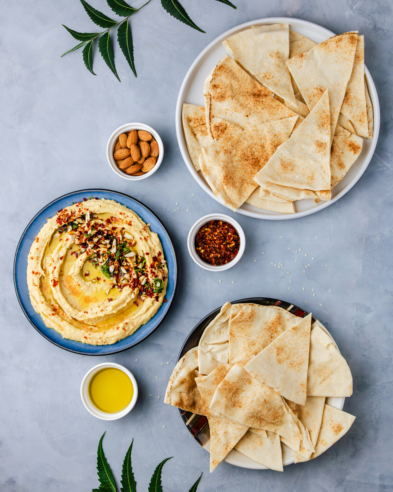
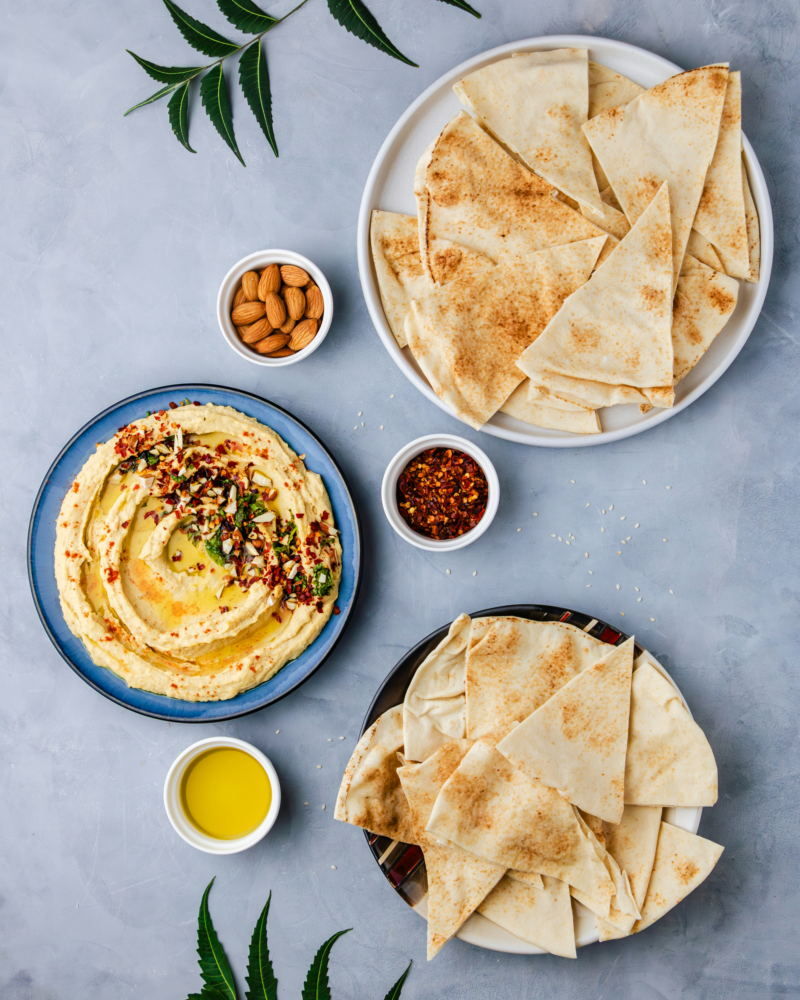

Unsere Spezialitäten
- Falafel & Hummus
- Manakish
- Baklava & arabischer Mokka
Öffnungszeiten
Täglich von 10:00 – 22:00 Uhr
Kontakt
📍 Straße 123, 86150 Augsburg
📞 0821 12345678
📧 info@dattel-cafe.de
🌐 www.dattel-cafe.de
✦ ✦ ✦
Über diese Seite
Diese Website war mein erstes HTML/CSS-Projekt. Ich habe sie erstellt, um das Layout und die Gestaltung einer fiktiven Café-Präsentation zu üben – inspiriert von einem echten Ort. Alle Inhalte dienen ausschließlich der Darstellung meiner gestalterischen Fähigkeiten.